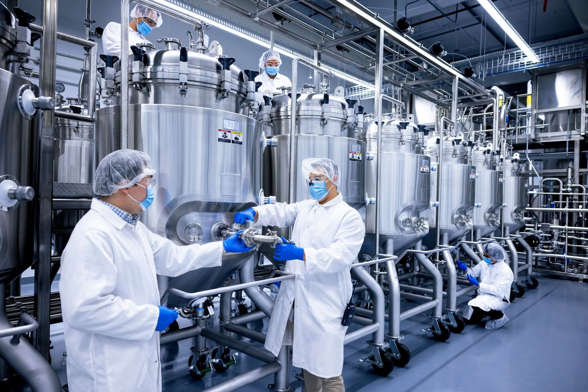

A carne cultivada em laboratório pode parecer algo de ficção científica, mas é fruto de décadas de pesquisa em biologia celular e engenharia de tecidos. O objetivo é produzir carne real sem precisar criar ou abater animais. Mas como isso é possível? Tudo se dá por um processo controlado que recria, dentro do laboratório, o ambiente ideal para que células animais cresçam e formem tecido muscular comestível.
O ponto de partida: as células animais
Tudo começa com uma pequena amostra de tecido retirada de um animal, geralmente por biópsia indolor. Essa amostra contém células-tronco musculares, também chamadas de células-satélite, que podem se multiplicar e formar novas fibras musculares. Estas células são cuidadosamente selecionadas e colocadas em um ambiente estéril, tornando-se a base da carne cultivada.
O alimento das células: o meio de cultura
Para crescer e se multiplicar, as células precisam se alimentar. Elas são colocadas em um meio de cultura, um “caldo nutritivo” que fornece açúcares, aminoácidos, vitaminas, sais minerais e fatores de crescimento. Antigamente, o meio utilizava soro fetal bovino, retirado de fetos de vaca, mas atualmente existem alternativas livres de origem animal, tornando o processo mais ético e sustentável.
Dentro de biorreatores — tanques de aço semelhantes aos usados na produção de cerveja —, as células são mantidas na temperatura e pH ideais, multiplicando-se milhões de vezes até formarem uma massa celular densa.
Da célula ao músculo: formando a carne
Para transformar células em carne, é usada a técnica de diferenciação celular. As células são estimuladas a se transformar em fibras musculares e células de gordura, os principais componentes da carne. Elas são depositadas sobre andaimes biodegradáveis, que dão suporte e formato ao tecido.
Com o tempo, as células se alinham e se fundem, formando fibras musculares tridimensionais que se parecem com a carne tradicional.

Maturação e colheita
Após formadas, as fibras recebem estímulos elétricos ou mecânicos que simulam movimentos musculares, melhorando textura, firmeza e sabor. Quando atingem o ponto ideal, o tecido é retirado do biorreator e pode ser moldado em hambúrgueres, nuggets ou cortes maiores.